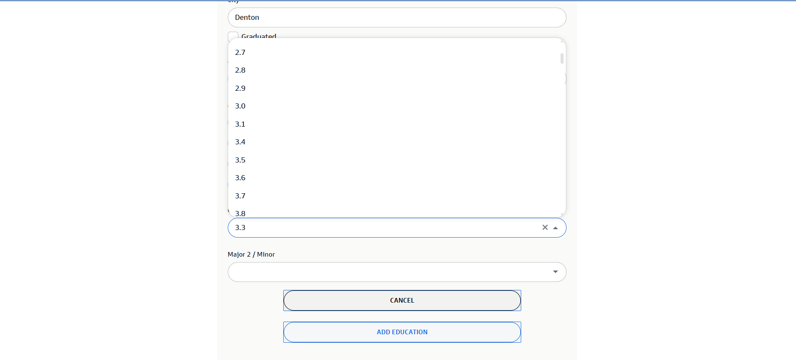

2026 Americas | Dallas | Risk Division
Business Information Systems Major &
Risk Analyst Candidate
Leveraging data analytics, SQL, and Python to identify, monitor, and manage financial risk.
Dedicated to engineering solutions for the 2026 Summer Analyst Program.
Contact Candidate
The Risk division aims to effectively identify and manage the firm's risks. I bring a blend of
technical engineering solutions (Python, SQL, Cloud concepts) and
business acumen (Finance, Accounting) to support this mission.
Alignment with Risk Division:
- Background in Data Analytics to assess expected and unexpected events.
- Experience building Automated Systems to track and report data.
- Strong foundation in Financial Principles (Accounting/Economics).
Core Competencies:
Risk Assessment
Data Integrity
SQL & Python
Business Intelligence
Cloud Computing Concepts
Process Automation
Bachelor of Science in Business Computer Information Systems
University of North Texas, Denton, TX | Expected May 2026 | GPA: 3.2
IMPORTANT NOTE REGARDING ONLINE APPLICATION:
The GPA dropdown skipped 3.2, so I selected 3.3 ON THE ONLINE APPLICATION. My actual GPA is 3.2 as displayed on my resume.
PROOF:

Relevant Technical Coursework: Computer Science I & II (C/C++), Data Analysis, Mainframe Concepts (COBOL), Business Statistics, Enterprise Programming (Java), Info Security, Database Applications (SQL/Db2).
ADDITIONAL FINANCIAL COURSEWORK (Verified via LinkedIn):
To bridge the gap between Information Systems and Financial Risk Management, I have completed the following courses which are detailed on my LinkedIn profile but not listed on my primary resume:
- Accounting Principles I & II
- Principles of Microeconomics & Macroeconomics
- Finance
Programming & Languages
- Python (Data Analysis & Automation)
- SQL (Complex Queries & Joins)
- Core Java, C++, C, COBOL
- HTML, CSS, JavaScript
Tools & Platforms
- BI Tools: Tableau, Power BI, Excel (Advanced)
- Environments: Jupyter Notebooks, IBM Db2, Linux, Windows
- Utilities: PuTTY, WinSCP, Visio
Campground Reservation Database System (Risk & Data Integrity)
SQL | Spring 2025
- Designed 4+ table schemas in IBM Db2, utilizing keys and indexes to ensure data integrity and reduce data risk.
- Developed 7+ complex SQL queries utilizing multi - table joins to extract critical business intelligence.
- Analyzed usage patterns to identify operational anomalies and trends.
Product Profitability & Geographic Analysis
Tableau | Fall 2024
- Engineered an interactive dashboard to visualize sales and monitor profit metrics.
- Applied logic to identify profit deficits (financial risk) across specific regions.
- Facilitated strategic resource reallocation decisions through data visualization.
Library Management System (Automation)
Python | Summer 2024
- Utilized OOP concepts (Inheritance/Polymorphism) to manage inventory datasets.
- Implemented CRUD operations to validate user data and maintain accurate records.
- Automated tracking features for overdue items to mitigate asset loss.
- IBM Z Xplore Advanced Badge: z/OS Admin, JCL, Data Set Management, COBOL (Fall 2024).
- Microsoft Office Specialist: Excel Associate (Spring 2024).
- Quantium Data Analytics Job Simulation: Performed data validation and statistical analysis (Spring 2025).
- BCG Data Science Job Simulation: Hypothesis development and mathematical modeling (Spring 2025).